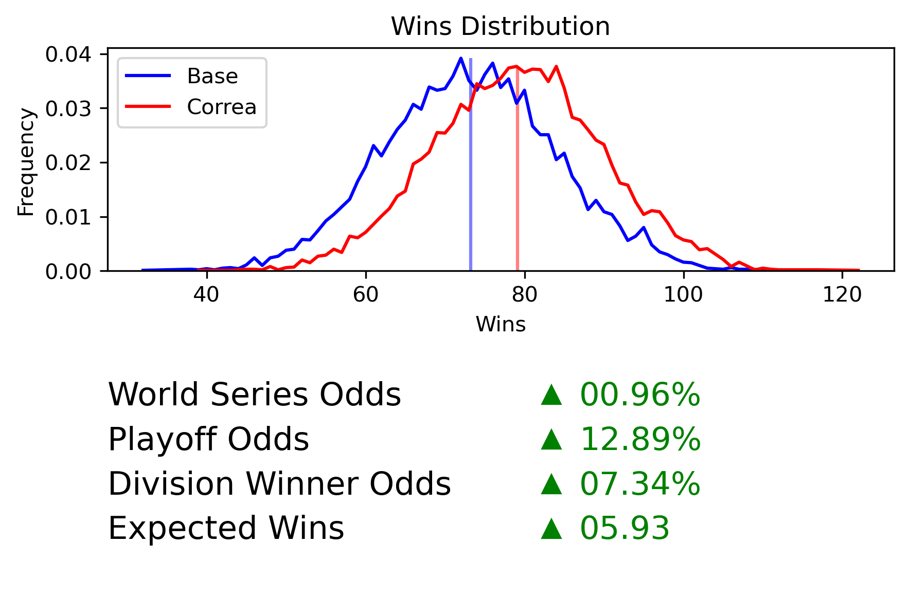

December 21, 2021
As everyone knows, the best time to write about modeling the MLB season is during a lockout, so here is the very belated Satchel 2021 season autopsy. There were some great predictions, and some very big misses, but overall, I'd say Satchel held its own. I compare Satchel with the projections published by FanGraphs before the season started since all of the underlying data comes from FanGraphs.
Here are the final division standings along with projections from Satchel and FanGraphs at the start of the year:
| Team | Satchel | FanGraphs | Actual | Satchel Difference | FanGraphs Difference |
|---|---|---|---|---|---|
| HOU | 93.56 | 88 | 95 | 1.44 | 7 |
| LAA | 87.51 | 84 | 77 | -10.51 | -7 |
| OAK | 81.86 | 83 | 86 | 4.14 | 3 |
| SEA | 71.64 | 74 | 90 | 18.36 | 16 |
| TEX | 62.14 | 72 | 60 | -2.14 | -12 |
| Team | Satchel | FanGraphs | Actual | Satchel Difference | FanGraphs Difference |
|---|---|---|---|---|---|
| MIN | 88.96 | 87 | 73 | -15.96 | -14 |
| CHW | 88.75 | 87 | 93 | 4.25 | 6 |
| CLE | 82.73 | 80 | 80 | -2.73 | 0 |
| KCR | 71.75 | 77 | 74 | 2.25 | -3 |
| DET | 67.39 | 72 | 77 | 9.61 | 5 |
| Team | Satchel | FanGraphs | Actual | Satchel Difference | FanGraphs Difference |
|---|---|---|---|---|---|
| NYY | 97.22 | 96 | 92 | -5.22 | -4 |
| TOR | 94.02 | 88 | 91 | -3.02 | 3 |
| TBR | 88.50 | 83 | 100 | 11.50 | 17 |
| BOS | 76.32 | 85 | 92 | 15.68 | 7 |
| BAL | 65.02 | 66 | 52 | -13.02 | -14 |
| Team | Satchel | FanGraphs | Actual | Satchel Difference | FanGraphs Difference |
|---|---|---|---|---|---|
| LAD | 106.95 | 98 | 106 | -0.95 | 8 |
| SDP | 95.73 | 95 | 79 | -16.73 | -16 |
| ARI | 75.62 | 74 | 52 | -23.62 | -22 |
| SFG | 72.30 | 77 | 107 | 34.70 | 30 |
| COL | 59.99 | 66 | 74 | 14.01 | 8 |
| Team | Satchel | FanGraphs | Actual | Satchel Difference | FanGraphs Difference |
|---|---|---|---|---|---|
| MIL | 87.02 | 79 | 95 | 7.98 | 16 |
| STL | 83.76 | 80 | 90 | 6.24 | 10 |
| CHC | 78.82 | 78 | 71 | -7.82 | -7 |
| CIN | 75.30 | 77 | 83 | 7.70 | 6 |
| PIT | 67.61 | 65 | 61 | -6.61 | -4 |
| Team | Satchel | FanGraphs | Actual | Satchel Difference | FanGraphs Difference |
|---|---|---|---|---|---|
| NYM | 89.64 | 92 | 77 | -12.64 | -15 |
| ATL | 88.35 | 89 | 88 | -0.35 | -1 |
| WSN | 85.85 | 83 | 65 | -20.85 | -18 |
| PHI | 80.85 | 81 | 82 | 1.15 | 1 |
| MIA | 64.84 | 73 | 67 | 2.16 | -6 |
On average, both Satchel and the FanGraphs model were spot on in projecting team wins, although each had their big misses. The two biggest misses for both models were the Giants and Diamondbacks. San Francisco wildly over performed their expectations, beating Satchel by about 35 wins and FanGraphs by 30. Arizona, on the other hand, had a rough year to say the least and underperformed Satchel and FanGraphs by 23.6 and 22 wins, respectively.
This performance similarity is not particularly surprising to me. As I mentioned at the top of this post and in my original post about the model, the individual player projection data I used in the model comes from the ZIPS and Steamer projections on FanGraphs. While I'm not familiar with the internals of the FanGraphs model, I'd imagine it use these individual projections as well in some capacity. It makes sense then that two models with similar (if not identical) inputs have similar outputs as well. Here is a summary of the differences between the number of wins each model projected and the actual wins we saw:
| Satchel | FanGraphs | |
|---|---|---|
| Mean Difference | -0.03 | 0 |
| Mean Absolute Difference | 9.45 | 9.53 |
| Largest Difference | 34.70 | 30 |
| Smallest Difference | -23.62 | -22 |
| Within 5 | 11 | 9 |
| Exactly Right | 2 | 1 |
Of the six divisions, Satchel correctly predicted the winners of two: the AL West and NL Central. Satchel had both the AL Central and NL East as effectively toss ups with the second place teams being the eventual division championships. In both cases the projected first and second place winners were within a game of each other. Despite doing a fantastic job projecting the Dodgers, Satchel (like everyone else) did not see the Giants posting a 107 win season to take the NL West. Similarly, Satchel significantly underestimated the Rays in the AL East.
Of the eventual division winners, only the Giants had a less than 48% chance to make the most season at all, and they only won the division in 1.4 percent of all simulations. This is yet another way of saying they wildly outperformed expectations this year.
| Make Playoffs | Win Division | |
|---|---|---|
| TBR | 46.65 | 18.56 |
| CHW | 49.49 | 34.61 |
| HOU | 65.09 | 49.67 |
| ATL | 48.33 | 29.14 |
| MIL | 49.18 | 38.54 |
| SFG | 9.28 | 1.4 |
| Make Playoffs | Make Wild Card | |
|---|---|---|
| BOS | 15.56 | 11.4 |
| NYY | 72.44 | 28.18 |
| STL | 39.11 | 10.25 |
| LAD | 92.31 | 22.5 |
The eventual champion Braves came into the season with a 4.7% chance of winning the World Series according to Satchel, making them the 9th most likely team to win. For comparison, the Dodgers were the overwhelming favorites with a 21.6% chance of winning. Preseason World Series odds and talent levels (as measured by projected team WAR) are highly correlated. This should come as no surprise given that the model uses relative talent measures to pick winners in every game.
Projected World Series odds provide a great example of the "all models are wrong, but some are useful" aphorism. For a model to be "right" it should at the very least be expected to pick the eventual World Series winner as the preseason favorite.1 But by the very nature of how these models work, the preseason World Series favorite is going to be the team with the most projected talent. Of course, this is not always the team that is eventually crowned champion due to the inherent randomness of sports. It would however be a fool's errand to try and include all of the randomness necessary for a "lesser" team to be the projected World Series favorite in a model. This leaves us simply hoping that our models can be useful.
A useful model is one which can provide unbiased projections of each team's season outcome, which can then be used to contextualize their actual performance. Given that, on average, Satchel did a very good job projecting team wins, I feel fairly comfortable using its results to say that Atlanta's championship was unlikely, but not so unlikely that it could only be achieved through divine intervention. Additionally, the model's results can be used to discuss what percentile of their expectations each team performed.
One of Satchel's new features allows us to look at where each team's season falls in the distribution of wins created by the model. Unsurprisingly, the Giants were at the very top of their distribution. They're joined by Seattle, who tragically missed the postseason despite putting together a 91st percentile season.
| Team | Wins | Percentile |
|---|---|---|
| San Francisco Giants | 107 | 99.6% |
| Seattle Mariners | 90 | 91.5% |
| Boston Red Sox | 92 | 88.0% |
| Colorado Rockies | 74 | 86.5% |
| Tampa Bay Rays | 100 | 80.1% |
| Detroit Tigers | 77 | 75.9% |
| Milwaukee Brewers | 95 | 71.3% |
| Cincinnati Reds | 83 | 70.5% |
| St. Louis Cardinals | 90 | 66.6% |
| Chicago White Sox | 93 | 61.2% |
| Oakland Athletics | 86 | 61.1% |
| Miami Marlins | 67 | 56.6% |
| Kansas City Royals | 74 | 55.8% |
| Houston Astros | 95 | 52.1% |
| Philadelphia Phillies | 82 | 51.7% |
| Atlanta Braves | 88 | 47.1% |
| Los Angeles Dodgers | 106 | 43.0% |
| Texas Rangers | 60 | 42.4% |
| Cleveland Indians | 80 | 40.2% |
| Toronto Blue Jays | 91 | 37.9% |
| New York Yankees | 92 | 32.3% |
| Pittsburgh Pirates | 61 | 29.6% |
| Chicago Cubs | 71 | 26.2% |
| Los Angeles Angels | 77 | 20.3% |
| New York Mets | 77 | 15.1% |
| Baltimore Orioles | 52 | 14.3% |
| Minnesota Twins | 73 | 10.6% |
| San Diego Padres | 79 | 9.1% |
| Washington Nationals | 65 | 5.1% |
| Arizona Diamondbacks | 52 | 2.7% |
Assuming there is a next season, I have made a few updates to Satchel to prepare for it. Most of these are internal to help with maintenance and reproducibility, but two are particularly important because they can change the model's output. First, instead of combining the ZIPS and Steamer projections myself, I've begun just using the FanGraphs depth chart projections, which effectively do the same thing, to make maintenance more simple. Additionally, I've added a new feature that allows a user to simulate trades and free agent signings, as well as easily see the effects of those transactions. As an example, here's how Detroit's projections change if they sign Carlos Correa:

I'm still tweaking this feature and making it a bit more flexible so that you can also simulate mid-season transactions. I should have it fully ready to go by Opening Day, whenever that may be. I will also once again be posting season projections for each team the night before Opening Day.
I still haven't open sourced the project because I'm not ready to offer the level of support I would want to if it were open source. If you have any methodology questions, I haven't changed much since my original post about the model. I'm also open to any feedback or ideas about features you'd like to see in the future.
1 I would argue that it would need to go even further and correctly pick a single team as the World Series winner.
Last Updated: December 21, 2021
Tweet